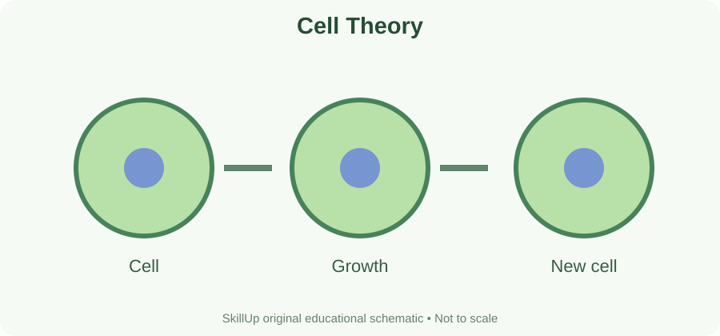

1. All organisms are cellular
Living organisms consist of one or more cells. Unicellular organisms perform all essential life functions within one cell.
Structured NCERT revision · Diagrams · Quick Checks · Explained NEET MCQs
The cell is the basic structural and functional unit of living organisms. Cell theory explains the cellular organization of life and the continuity of cells through division.
Living organisms consist of one or more cells. Unicellular organisms perform all essential life functions within one cell.
Cells form the structural and functional basis of organisms. Multicellular organisms contain specialized cells.
New cells originate by division of pre-existing cells, maintaining continuity of cellular life.
| Scientist | Contribution |
|---|---|
| Robert Hooke (1665) | Observed and named “cells” in cork. |
| Antonie van Leeuwenhoek | Observed living microscopic cells and microorganisms. |
| Matthias Schleiden (1838) | Proposed that plants are composed of cells. |
| Theodor Schwann (1839) | Extended cellular organization to animals. |
| Rudolf Virchow (1855) | Popularized “omnis cellula e cellula”: cells arise from cells. |

Classical cell theory: Schleiden and Schwann established that plants and animals are composed of cells. The original formulation did not explain how new cells form.
Virchow's addition: Cells arise from pre-existing cells, rather than appearing spontaneously.
Exam distinction: Viruses are acellular infectious agents; they require host cells for replication and are not exceptions proving independent acellular life.
Schleiden + Schwann: organisms consist of cells. Virchow: every cell comes from a pre-existing cell. Viruses: acellular.
Try to answer before expanding each explanation.
Matthias Schleiden and Theodor Schwann.
Every cell originates from a pre-existing cell; this principle is associated with Rudolf Virchow.
They lack cellular organization and depend on living host cells for replication.
Prokaryotes lack a membrane-bound nucleus and membrane-bound organelles. Their DNA lies in a nucleoid region.
Genetic material is not surrounded by a nuclear envelope.
Cytoplasmic ribosomes consist of 50S and 30S subunits.
Many bacteria have a peptidoglycan wall, while Mycoplasma lacks a wall.

Nucleoid · 70S ribosomes · Cell envelope
Nucleoid.
70S.
Mycoplasma.
Eukaryotic cells possess a membrane-bound nucleus and specialized membrane-bound organelles.
Chromosomes lie inside a nuclear envelope with pores.
Mitochondria, ER and Golgi apparatus perform distinct functions.
Cytoplasmic ribosomes are generally 80S; organelles may contain 70S-type ribosomes.

Nucleus · Organelles · Ribosomes
Nuclear envelope.
Mitochondrion.
80S.